PhD, Quantum many-body physics
Quantum and quantum-inspired solutions for simulations, optimisation, forecasting, and studying complex and emergent phenomena.
I am a quantum physicist with a PhD in quantum many-body physics who develops quantum and tensor-network algorithms for simulations, optimisation problems, forecasting, and studying complex and emergent phenomena in both quantum and classical systems.
Finding a low-cost route through a network, estimating the probability of a rare and extreme event, simulating a strongly correlated material: each of these means searching among possibilities whose number grows exponentially with the size of the problem. Tensor networks and certain quantum circuits can find and use the low-dimensional structure hidden inside that growth. I have developed these methods for more than ten years and applied them across quantum physics problems and in industry, in finance, logistics, mobility and energy.
In my PhD, I wrote density-matrix renormalisation group (DMRG) codes from scratch for topological one-dimensional Fermi gases, frustrated spin chains and Y-junctions of quantum wires. During my postdoc I worked on entanglement dynamics under noise and measurement and on international collaborations on quantum caustics and monitored quantum circuits, and guided a master’s project on neural-network error mitigation for near-term quantum circuits. My pre-PhD research was in nonequilibrium statistical physics: self-organised criticality, non-Markovian dynamics, cascade propagation on networks, avalanche and first-passage statistics, and heavy-tail fitting. These form the backbone to compute quantitative risk, to model contagion and systemic risk, and to estimate rare-event probabilities, in weather, finance and logistics alike.
The computers we use every day store each yes-or-no choice as a bit, 0 or 1, and each added choice doubles the number of combinations. Five friends each picking one of four burgers already make 1,024 possible orders, a tall order to check one by one, and fifty yes-or-no choices give about a million billion. A supercomputer, with all its parallel processors, still has to find the proverbial needle in a haystack that keeps doubling in volume with every added option. So classical computers settle for a “good enough” answer found by heuristics (good guesses), which for a huge number of choices is not necessarily the best.
An alternative to these yes-or-no (0 or 1) choices could be to explore all possible options together through qubits instead of bits. A qubit can be 0 and 1 at the same time, in what physicists call a superposition, so the state of many qubits needs one number for every combination of their 0s and 1s. So the entire haystack is held at the same time!
However, to follow 40 qubits exactly, an ordinary computer has to store about a trillion numbers, close to 18 terabytes; for 60 qubits it needs about 18 million terabytes, far beyond the memory of the largest supercomputers. In contrast, 60 qubits on a fully quantum computer hold all those numbers at once. When the problem is encoded and the machine is steered correctly, by quantum annealing, a quantum walk or another quantum algorithm, quantum interference gathers the probability onto the right answer. Reading the qubits then most likely gives the needle in that haystack, without the straws needing to be checked one by one.
In many problems, when quantum information moves through the solution space slowly or does not spread around the entire space, tensor networks can still follow it step by step on a laptop or a cluster (say, knowing your friends’ tastes already makes it easier to order food). However, in problems where the information is completely scrambled, that is, where every choice depends on all the others (ordering on Uber Eats for a group in which what each person wants depends on what everyone else orders), classical computers would take inhumanly long to follow it (depending on how many people you are ordering for). Then, better order yourself a quantum computer!
While “quantum” seems to be the buzzword today, “logical qubit” counts are expected to remain limited for the next few years. On that budget, a quantum circuit that fails to outperform a well-tuned classical baseline is hardly the end of this story. On several problem classes and specific instances, quantum-inspired tensor-network methods or hybrid classical-quantum methods already outperform Monte Carlo sampling, which suggests that progress on today’s state of the art does not have to wait for million-qubit fault-tolerant hardware. For anyone with a hard problem in hand, and for those of us building the tools, useful work can begin now, and its reach will grow as quantum hardware matures.
In addition to penning such puns, scientific papers, proposals and coding entire repositories (from those pre-AI years), I also write quantum stories for my dad, and I enjoy discussing “quantum” with anyone who makes small talk with me, so beware if we cross paths!
Quantum solutions for humans.
Small gains on hard problems are worth a great deal, to companies, to clean energy and to people in need. One mile less per driver per day is worth up to 50 million dollars a year to UPS; better forecasts raised the value of Google’s wind power by a fifth; congestion on Germany’s power grid cost about 3 billion euros in 2023; and about three quarters of the cost of a humanitarian response lies in its supply chain. These are exciting times to bring quantum computing, and the methods it has inspired, to such problems, and to say plainly where they help and where a classical computer is enough.
I build the methods on both sides of that line (classical vs. quantum) and have often walked the fine line (hybrid classical-quantum) to bring out the best of both worlds. Most of my works are aimed at understanding how information moves in any quantum system, and applying that understanding to make better sense of real-world problems and get better solutions for them.
Electrons in a metal and atoms cooled close to absolute zero are fermions, and when they push or pull on one another strongly, they behave as a crowd that no single particle can explain. Superconductors, which conduct electricity with no loss at all, come out of such crowds, and forty years after high-temperature superconductors were found in 1986, how they work is still debated. A material that did the same at room temperature would change power lines, medical scanners and computers, and simulating such materials is among the first tasks people hope quantum computers will take on.
We built fully fermionic simulation codes, and with them found that attracting fermions in a magnetic field pair up while moving, so that pairing and magnetism coexist, and that tunnelling into a junction of three interacting quantum wires is enhanced when the particles attract. How such pairing behaves with heat, with disorder and in two dimensions is the question we are asking. Related papers
Three tiny magnets on a triangle cannot each point opposite to both of their neighbours, and this frustration leaves a material torn between arrangements. Some crystals settle it by pairing neighbouring spins and shifting their own atoms to lock the pairs in place, as CuGeO3 does below 14 kelvin; in a spin liquid the spins never settle at all, even at absolute zero. In 2021, a programmable quantum simulator of 219 atoms built a frustrated spin liquid as a first step towards protected quantum information.
With colleagues in Kolkata and at Princeton, we built one model of frustrated spin chains, with the strength of frustration as its single dial, that accounts for the magnetism of an organic crystal and of CuGeO3, and for the heat-capacity anomaly and the neutron spectrum of CuGeO3. Magnets that cannot all be satisfied return in the optimisation area below. Related papers
A topological property changes only in whole steps, like the number of holes in a bagel, so small knocks cannot change it; the 2016 Nobel Prize in Physics honoured such phases. A Majorana qubit, proposed by Kitaev in 2000, would split one bit of information between the two ends of a wire, where no local disturbance can reach it, and cold atoms steered by lasers let such wires be built with every setting under control. Claims of Majorana qubits in solid-state devices have been retracted or challenged, so an honest test of each platform matters.
We tested, in large simulations, a proposal to build Majorana qubits from a trapped gas of cold atoms, and found that a single weak impurity removes their protection; in a wire whose spins are locked to their direction of motion, we located the transition into a phase that can host Majorana modes. Whether a defect that destroys the edge state leaves the pairing in the bulk standing is what we want to know next. Related papers
A change made to one qubit reaches the others at a finite speed, filling a light cone like the one drawn at the top of this page; Lieb and Robinson proved this speed limit in 1972 for particles that interact only with nearby ones, and it was first seen in cold atoms in 2012. In chaotic systems, the information then scrambles into correlations among many particles, hidden from any local look, the same scrambling that physicists study in black holes. That speed limit caps how quickly distant qubits can be entangled.
Among other things, we showed that the bright fringes at the edge of that light cone follow a universal 2/3 rule across a whole phase of matter, and proposed a “litmus test” for noisy quantum processors based on that universal shape. We are following such fronts into disorder and chaos, into other models and onto quantum circuits, and asking what happens to them when the system is watched. Related papers
In the quantum world, looking changes what is there. Measurements repeated often enough can freeze a system in place, and on many qubits they can switch it from a phase rich in entanglement to one that holds little of it, as seen on up to 70 superconducting qubits in 2023. Restarting a search at random times can make it find its target sooner, while noise and dissipation leak information from a quantum computer into its surroundings. Machines that correct their own errors measure and reset qubits in every cycle, so these interruptions decide how much of their usefulness survives.
Along the way, we derived that the gap between two standard measures of entanglement on qubits reset at random equals the information a part of the system keeps about its last reset, readable from every run without the post-selection that monitored circuits need, and tested it on superconducting qubits. We have also presented evidence that a chain watched by a detector that stays silent keeps an extended critical phase. We are working out where to place a measurement, what it costs in energy to keep entanglement alive, and what can be learnt from what was ruled out. Related papers
Most of the possibilities in a large problem never matter, and a tensor network writes down only the part that does, as a chain of small matrices. Developed largely to describe entangled quantum states, the same mathematics compresses machine-learning models, prices financial products, solves the equations of fluid flow and simulates the quantum computers being built. It runs on the computers we already have, and the size of the matrices a problem needs is an early sign of how hard that problem is.
We use tensor networks for quantum dynamics, random processes and optimisation, and are extending them to inference under noise and to rare paths through disordered networks. Related papers
Floods, blackouts, epidemics and market crashes are rare, yet they cause most of the damage, and their sizes follow heavy-tailed laws in which the extreme is far more likely than a bell curve would suggest. A sandpile fed one grain at a time organises itself to the edge of collapse, where a single grain can set off an avalanche of any size, and a similar picture describes cascades of failure in power grids and in financial networks. Planning for the average day leaves a city, a grid or a portfolio exposed on the one day that matters.
Our own Monte Carlo codes model avalanches, epidemics and cooperation on networks, and now we have state-of-the-art tensor-network machinery to do that even better, computing the odds of a rare event directly from the rules of the process. We are taking that machinery to supply chains and to the crowded orbits of satellites, where one failure can trigger another.
Choosing the best schedule, route or layout often involves more options than there are atoms in the observable universe, and it is the daily work of railways, airlines, delivery fleets and power grids. Many of these problems are, mathematically, a set of magnets that cannot all be satisfied at once, looking for its lowest-energy arrangement, which is what a quantum processor of interacting qubits is built to explore. Whether that brings an advantage, for which problems and at which size, is still an open question, answered one problem at a time.
We have benchmarked quantum, quantum-inspired and classical solvers side by side on problems from industry, and let small quantum circuits guide a classical solver on networks too large for any single circuit. Wind-farm layouts, rail timetables and the planning of power grids are on our list.
Almost any rich physical system can be taught to forecast. In 2003, the ripples in a bucket of water, read by a simple classifier, were used to tell spoken words apart. Reservoir computing trains only that readout, and a quantum system offers a reservoir whose possible states grow exponentially with its size; a quantum reservoir of 108 atoms has already been run. Forecasts of wind, power demand and market volatility shape daily decisions in energy and finance, and chaotic series like the weather are the hardest of all.
We design such forecasters in simulation, using tensor networks to go beyond the sizes ordinary methods allow, and tune them with what monitored circuits teach about entanglement. The first series we test them on are wind, weather and volatility.
Full list on Google Scholar.
These papers, and the work behind them, span statistical physics, condensed matter, quantum information and many-body physics, joined by simulation, from Monte Carlo and exact methods to tensor networks and quantum circuits. The applications of most interest are in logistics, energy, finance and new materials; in applied industrial research, they included the optimisation work of QCMobility, testing quantum algorithms and benchmarking them vs. classical on real logistics and mobility data and problems.
The light that dances on the floor of a swimming pool, and the patterns it makes beside a glass of water, are “caustics”, where light bent by a curved surface gathers into bright lines. Flip one spin in a chain of interacting spins, and the flip spreads through the chain as a wave whose front focuses into a caustic with fringes of its own. This package follows the spreading of such quantum caustics in chains of several hundred spins with tensor networks. It can check every run against an exact calculation on small chains, and gives the expected caustics pattern when the same dynamics is run on a quantum computer.
A walker who steps left or right at random, as a very drunk person might, reaches one end of a street sooner or later. One grain dropped on a pile of sand can likewise set off an avalanche that is small one time and very large the next. No two runs are alike, yet the arrival times and the avalanche sizes follow definite probabilities. The package uses a tensor network to compute these probabilities, instead of independently following every path the walker or the pile can take, whose number multiplies with every step; its results can be compared with exact answers on small systems and with Monte Carlo simulations over many runs of this dynamics.
All public repositories on GitHub.

LinkedIn Google Scholar GitHub
If you are curious how a quantum or quantum-inspired idea might apply to your problems or your hardware, or simply curious about quantum, send me a message on LinkedIn.